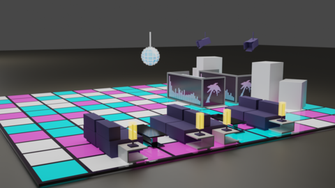
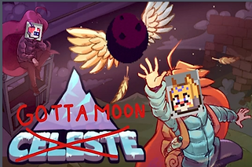
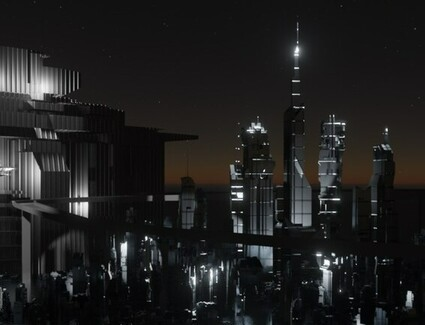

Group 5 Train Portfolio
Group Members: Jonathan Lewis, Joe Frumenti, Skyler Haataja, Ethan Wang, X. Christopher Zhang
This project is an interactive portfolio that is made out of train cars.
Each train car will represent a different project for the portfolio, and
the user will be able to navigate the various train cars to explore the portfolio
in an interesting way.
Ship It
By Skyler Haataja
Lead modeler for our senior capstone game.
Ship It is a dating sim with a 2.5D style inspired by the style of Octopath Traveler.
I Made all of my models in blender and imported them into Unreal Engine 5.
I modeled and textured the bar, movie theatre, club, and the ship's structure.
This project taught me more about texturing, baking, lighting, and blender's tools than anything project prior.

Seasonal Fractal Tree
By Jonathan Lewis and Joe Frumenti
A tree made using fractals coded in p5.js that cycles between being dormant
and fully grown full of leaves with autumn colors
Gotta Moon
By Joe Frumenti's 172 Team
Gotta Moon is a game that Joe developeds in collaboration with a team of eight individuals
during a 2-week game jam.
Our task was to rectify a flawed and unstable project and ensure that it was user-friendly.
'I undertook the demanding responsibility of analyzing countless lines of unorganized code,
in addition to implementing key features such as a personalized turn acceleration,
elastic deformation animations, etc..

Cyber City in the Dark
By X.Christopher Zhang
Cyber cities are always simple but brilliant.
Cyber pursues a minimalist style, but it is luxurious and mysterious.
I hope I can find inspiration in some cubes with anamorphic overlays
and try to render them in a relatively understated cyber-dominant color style.
They may be predominantly silver with dark towering skyscrapers.
I try to embellish them with some small but harsh light sources to highlight their mysterious and advanced feeling.
